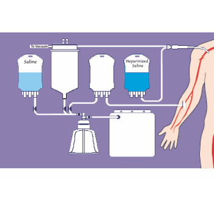

Processo de Reinfusão de Sangue Autólogo
O sangue é aspirado no campo operatório sendo processado em um kit descartável acoplado ao “cell-saver”. Dentro do kit o sangue é misturado com anticoagulante e soro fisiológico e é bombeado para um reservatório. Quando o sangue aspirado atinge um determinado volume dentro do reservatório, é lavado com soro fisiológico dentro de um bowl, acoplado ao kit descartável, sendo plasmao, plaquetas e debris residuais desprezados. O concentrado de hemácias lavado obtido é então enviado para uma bolsa que será utilizada para a transfusão no paciente.
